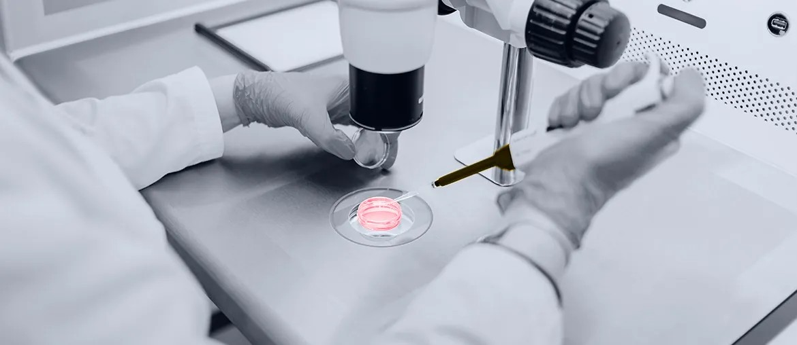

Map release paths
Map SmartBridge, SmartConnect, AppelloHQ, and Appello Manager release paths, then flag firmware and service acceptance gaps.
Proposal brief for James Thorburn
Saw Appello is hiring a Technical Project Manager for Product, Manufacturing, and IT. That points to new product delivery across hardware, firmware, software, suppliers, and live careline service.
The TPM role says Appello is moving more product work into delivery. It joins hardware, firmware, software, suppliers, and service readiness. That mix can slow releases if engineering capacity is thin. In telecare, delays are not only cost issues. They can affect resident safety, housing provider trust, and the digital switchover plan.
A six-week readiness sprint, then a quarterly squad if the fit is good.
Map SmartBridge, SmartConnect, AppelloHQ, and Appello Manager release paths, then flag firmware and service acceptance gaps.
Add two C++ or backend engineers to close device, SIP, and cloud integration tickets before supplier dates move.
Build QA automation around alarm flows, network changes, call handling, and post-launch support checks for every release.
Run weekly demos with the TPM, operations, and support teams so risks are visible early.
Elinext is a full-cycle software development company, active since 1997. We have about 700 in-house specialists, with no freelancers or subcontractors. Our work includes C/C++, Java, .NET, web, mobile, QA, DevOps, and support. We hold ISO 9001 and ISO 27001, useful for safety-sensitive telecare work. We can work under Appello's product lead, while your UK team owns suppliers. That keeps control local and adds delivery strength where pressure builds.

Moved manual lab monitoring toward online data flow.
Read case study
Connected machine data to improve production decisions.
Read case study